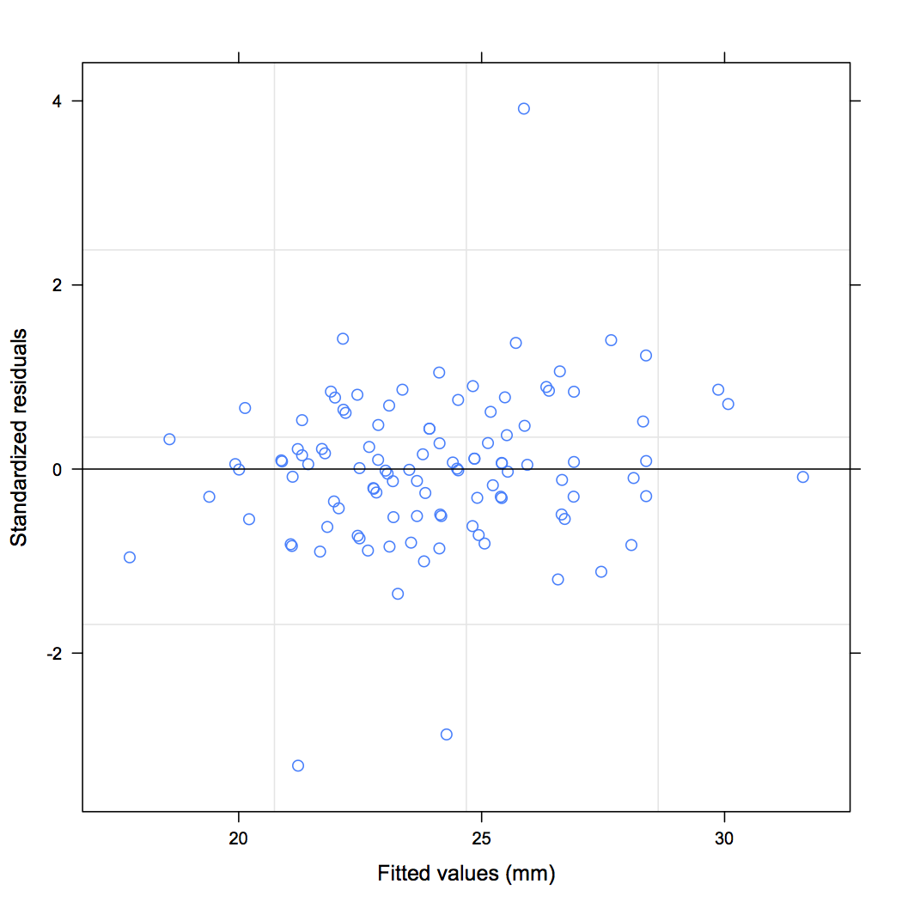
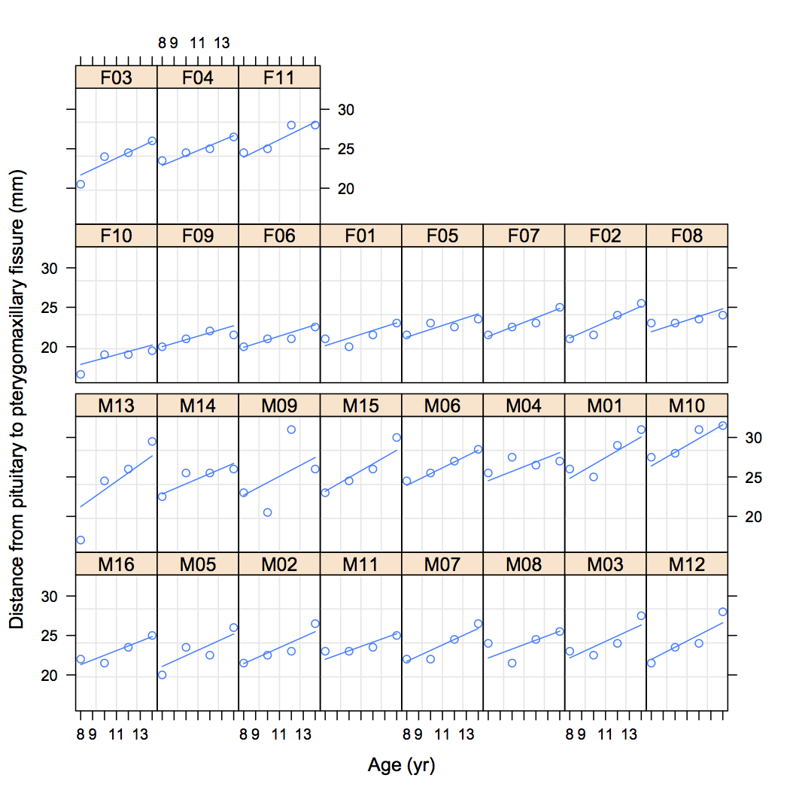

Next: 線形混合効果モデルの理論と計算方法 Up: S-PLUSによる混合効果モデル解析 Previous: S-PLUSによる混合効果モデル解析
> fm1 <- lme(y ~ x, …) > fm2 <- update(fm1, . ~ . + z) # fm1にzを加える > fm3 <- update(fm2, . ~ . - z) # fm2からzをなくす（fm1と同じ）
説明変数に因子型変数 f が含まれている場合，
> fm1 <- lme(y~f-1, ...)のようにすることで，セル平均をパラメータ化することが可能。
特定の変数をセンタリングしたり，高次の項を含めたりしたい場合，
> fm1 <- lme(y~I(x-10), …) > fm1 <- lme(y~x+I(x^2), …)のように関数 I() を用いるとよい。
例えば，データ Orthodont について，
> fm6 <- lme(distance ~ I(age-11), Orthodont) > fm7 <- update(fm6, fixed = distance ~ Sex * I(age - 11))
> plot(fm1, form=resid(., type="p")~fitted(.) | Subject, abline=0)であてはめ値と残差のプロットを描ける1
> plot(augPred(fm1), grid=T)のようにすれば，元のデータに予測値を重ねてプロットを描くことができる。
データ Orthodont を用いた場合，
> plot(fm6) # 当てはめ値と残差 > plot(augPred(fm6), layout = c(8,4), between = list(y = c(0, 0.5)), grid = T) # データと当てはめ値
 
また，データが釣り合い型か確認するには，table() を用いて以下のようにすればよい。
> table(Orthodont$age, Orthodont$Subject)
M16 M05 M02 M11 M07 M08 M03 M12 M13 M14 M09 M15 M06 M04 M01 M10 F10 F09 F06 F01 F05 F07 F02 F08 F03 F04 F11
8 1 1 1 1 1 1 1 1 1 1 1 1 1 1 1 1 1 1 1 1 1 1 1 1 1 1 1
10 1 1 1 1 1 1 1 1 1 1 1 1 1 1 1 1 1 1 1 1 1 1 1 1 1 1 1
12 1 1 1 1 1 1 1 1 1 1 1 1 1 1 1 1 1 1 1 1 1 1 1 1 1 1 1
14 1 1 1 1 1 1 1 1 1 1 1 1 1 1 1 1 1 1 1 1 1 1 1 1 1 1 1
Taichi Okumura